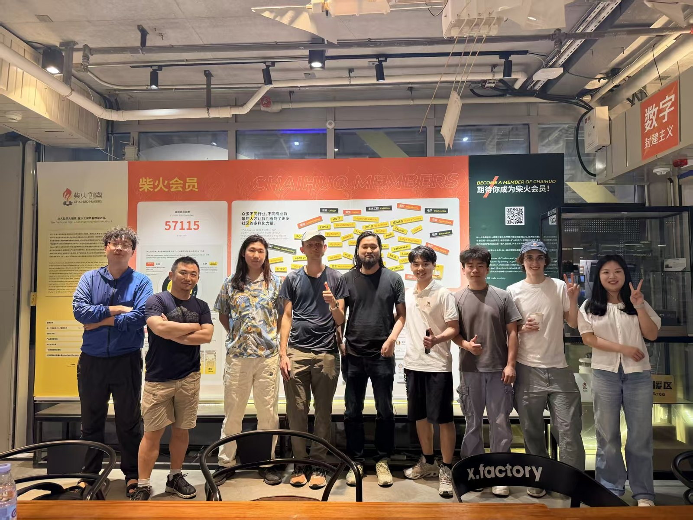
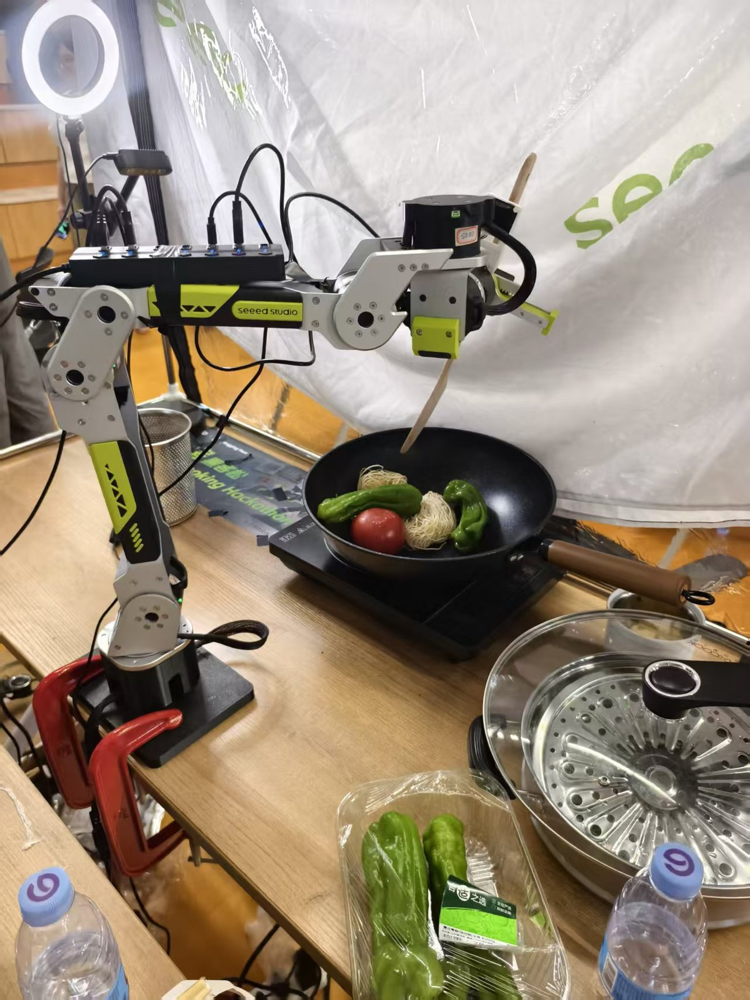
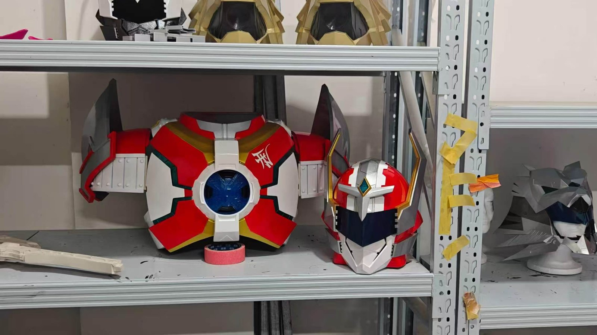

江苏科技大学
土木工程 / 嵌入式软件工程。
SHENZHEN PRODUCT BUILDER / FOUNDER
童培新，XbotPark 在孵项目联创。
从消费与社群出发，走进软硬件与品牌创造。


CONSUMER → HARDWARE → OWN PRODUCT
02 / SELECTED WORK
拖动或点击箭头浏览
点击卡片查看细节
03 / ABOUT PAYSON
创业者的价值，是让市场、工程与品牌在同一张桌上工作。
土木工程 / 嵌入式软件工程。
消费品电商渠道运营。
门店经营、骑行驿站与社群。
IoT、ReSpeaker 与 Rebot。
磁吸打印夹爪与 Mettle。


